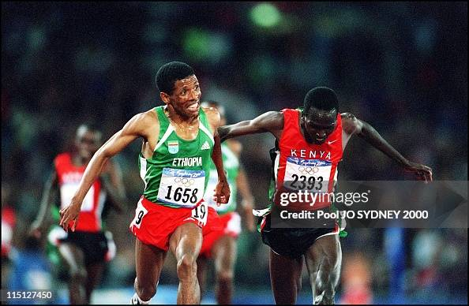

The Pride of Ethiopia
Haile Gebrselassie is a world-renowned Ethiopian long-distance runner and a two-time Olympic gold medalist. Known for his incredible speed, endurance, and sportsmanship, Haile has inspired millions across the globe. His achievements have brought immense pride to Ethiopia and the world of athletics.
Haile Gebrselassie is more than just an athlete; he is a symbol of hard work, perseverance, and humility. His dedication to his craft and his efforts to give back to his community make him a true role model. Whether it's on the track or in his business ventures, Haile continues to inspire with his determination and positivity.